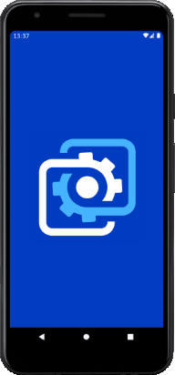
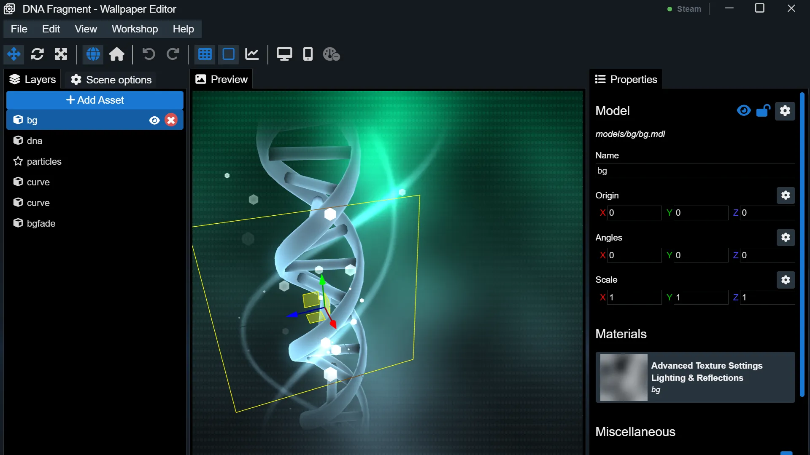

新手友好入门：用 Wallpaper Engine 把你的桌面活起来
第一次听说 Wallpaper Engine？这篇带路党文章从零开始，带你五分钟搞定安装、订阅第一张壁纸、打开屏保模式，三个最值得新手先玩的功能一次讲透。
这篇能带你从完全不懂到用起来——不需要任何电脑基础，跟着一步一步走就行。
它到底是干嘛的？一个生活化类比
你见过那种会动的桌面吧？桌面上不是一张静态图片，而是循环播放的 3D 场景、动漫角色、星空粒子、甚至能跟着你鼠标动的视差画面。这就是 Wallpaper Engine 做的事——把你的 Windows 桌面变成一个活的、有声音的、会动的画布。
打个比方：传统桌面壁纸是一张挂在墙上的海报，wallpaperengine官网就是把海报换成了一台正在播放内容的小电视，而这台小电视背后连着一个几十万人在上传内容的社区。
五分钟上手：从下载安装到第一次跑通
别担心，整个过程真的不到五分钟。
首先你得有一份软件本体——最正规的渠道是从官方下载拿，Windows 上装完就是个常驻后台的小程序，不吃资源、不弹广告。启动后你会看到一个干干净净的界面，左侧是你已经订阅的壁纸列表，中间是预览区，顶部有几个分类标签。
然后就是核心操作了：打开 Steam 的创意工坊（Workshop），搜索 Wallpaper Engine。你会发现数十万款别人做好的壁纸——3D 场景、动漫风、赛博朋克、山水风景、游戏原画……总有一款戳你。每款壁纸旁边有一个「订阅」按钮，点一下就完事。
订阅这个词第一次出现时可能会让人误会，但这里的订阅不是按月付费，就是"关注 + 自动更新"的意思——你订阅的壁纸会自动下载到本地，创作者更新了新版本你这边也会自动拉取，换电脑登录 Steam 账号订阅列表还能自动恢复。
订阅完回到 Wallpaper Engine 客户端，找到刚订阅的那张，双击一下——桌面瞬间就活了。
上手后先玩这三个功能
搞定第一张壁纸之后，别急着继续刷工坊，先把这三个功能摸一遍，你会发现 Wallpaper Engine 远不止"换会动的桌面"这么简单。
把壁纸变成屏保
你可能不知道：Wallpaper Engine 的任何壁纸都能直接设成 Windows 屏幕保护程序。这个功能藏在设置里的「壁纸」选项卡，往下翻就能看到「屏幕保护程序」区域。选好要当屏保的壁纸（或者专门建一个屏保播放列表），点一下「打开屏幕保护设置」，在 Windows 弹出的设置窗口里选 Wallpaper Engine 就行。
你会发现：电脑闲置一段时间后，屏保自动启动；移动鼠标或按任意键就退出；屏保期间壁纸引擎的渲染会被完全暂停，不额外耗显卡资源。比系统自带的那几个傻屏保酷多了。建议专门建一个屏保用的播放列表，挑轻量级、低帧率的场景壁纸，切换频率设高一点，展示效果特别好。
PC 和手机之间传壁纸
如果你手里有 Android 手机，Wallpaper Engine 自带的无线传输功能一定要试一下。前提很简单：PC 和手机连同一个 Wi-Fi，PC 端的 Wallpaper Engine 保持运行，手机上装了 Android 伴侣应用。
手机这边打开伴侣应用，点底部「传输」标签，屏幕上会蹦出一个 6 位 PIN 码。然后在 PC 端主界面底部找到那个手机图标，客户端会自动扫局域网里的 Android 设备，扫到后输入刚才的 PIN 码，配对成功。选中要传的壁纸，点传输——一张 10MB 的视频壁纸大概 5 到 10 秒就完事，传完手机还会自动把第一张设成桌面背景。

万一扫不到手机怎么办？大概率是两台设备没在同一个 SSID，或者路由器开了 AP 隔离，关掉就行。PIN 码如果过期了，把手机的传输页关掉重新打开就会生成新的。
自己动手做一张壁纸
这可能是很多新手没想到的：Wallpaper Engine 自带一个完整的场景编辑器，不用写代码也能做出专业级的动态壁纸。打开编辑器后是四栏布局——左边素材库、中间场景画布、右边属性面板、底部时间轴。
你会看到什么？把一张自己喜欢的 PNG 图片拖进画布，就能在属性面板里调它的位置、大小、旋转角度。然后打开时间轴，给这个元素加一个动画轨道，让它缓缓飘起来或者随鼠标移动。还能叠加各种效果——发光、模糊、水流、粒子……这意味着什么？你可以把自己电脑里那张用了好几年的静态桌面图，花十分钟改成独一无二的动态壁纸，而这一切都在同一个界面里完成，不需要装 Photoshop 也不需要懂 Unity。
编辑器还有一个特别有意思的功能叫音频分析器——场景里的元素可以跟着你电脑正在播放的音乐跳动。比如一个柱状图随鼓点起伏，星空粒子跟着高频闪烁，整个桌面变成了一个可视化的音乐播放器。这些参数调起来有不少门道，想深挖可以去wallpaperengine文档里慢慢翻。

小白的三个常见疑问
订阅数量有上限吗？
没有硬性上限，但别太贪心。订阅几百款之后，每次启动 Wallpaper Engine 扫描所有壁纸会变慢，磁盘占用也哗哗涨。建议定期清理掉已经看腻了的，保持一个精简的订阅列表反而体验更好。
壁纸会自动更新吗？
会。创作者更新了壁纸后，Steam 会自动推送最新版到你本地，你完全不用管。如果不想要自动更新了，在 Steam 库里右键 Wallpaper Engine → 属性 → 更新选项卡，可以调成"仅启动时更新"或者"手动更新"。
为什么有些壁纸在我电脑上不流畅？
大概率是显卡吃不消。有些 4K 视频壁纸或者复杂的 3D 场景对显卡要求很高，笔记本核显带不动很正常。解决办法：在 Wallpaper Engine 设置里打开「性能」选项卡，把「质量预设」调到平衡或者高性能以下，或者在每张壁纸单独的设置里调低分辨率和帧率。
写在最后
好了，现在你应该已经能熟练地订阅壁纸、切换屏保、甚至动手改一张自己的桌面图了。Wallpaper Engine 的好玩之处在于它的社区生态——几十万人在持续上传和更新内容，你永远不愁没新东西看。
等你把上面三个功能玩熟了，不妨试试工坊里那些高分的场景壁纸，或者打开场景编辑器给自己做一张独一无二的专属桌面。进阶的路子还长着呢。顺手说一句，这些资料也同步放在了 GitHub、Gitee、GitCode 三个仓库里，国内访问选 Gitee 或 GitCode 体验更好。